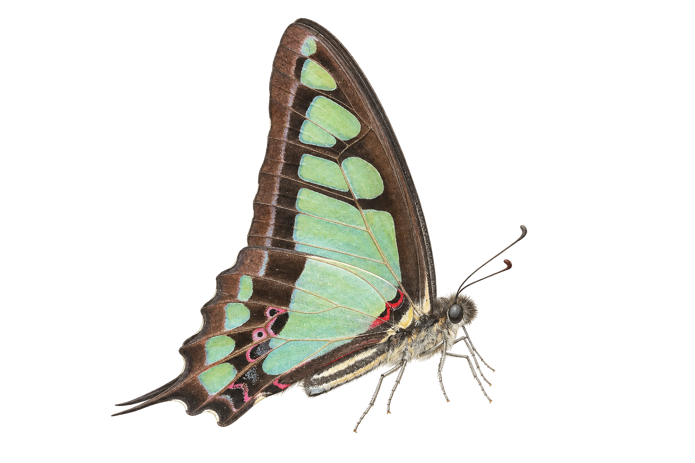

Papilionidae · 019 / 165
গ্লাসি ব্লুবটল
Graphium cloanthus

বৈশিষ্ট্য ও শনাক্তকরণ
কালো ডানায় চওড়া নীলচে-সবুজ ফিতা এবং সরু লম্বা লেজ থাকে।
স্ত্রী ও পুরুষের পার্থক্য
পর্যালোচিত ওকিনাওয়ার রেকর্ডে লিঙ্গভেদের বিস্তারিত নিশ্চিত হয়নি।
আকার
ডানা মেলে বিস্তার ৫৫–৭০ মিমি; নেপালের বেগনাস–রুপা অববাহিকার নির্দেশিকার প্রজাতিগত মান। শুধু ওকিনাওয়ার নমুনা বা তাইওয়ানি উপপ্রজাতির পরিমাপ নয়।
ওকিনাওয়ার দ্বীপে রেকর্ড
স্থানীয় সূত্রে উল্লিখিত দ্বীপের রেকর্ড নিচের সূত্রে দেখুন। প্রদেশে ইরিওমোতের রেকর্ড আছে; সূত্রে ১৯৭৩ সালের ৫ আগস্টের দুটি পুরুষ উল্লেখিত। সাধারণ স্থায়ী প্রজাতি নয়।
আবাসস্থল
দ্বীপের রেকর্ড আবাস-তালিকায় দেখুন। ওকিনাওয়ায় দীর্ঘমেয়াদি আবাস-পছন্দের বিস্তারিত নিশ্চিত হয়নি।
জীবনযাপন ও অতিরিক্ত তথ্য
জাপানি নামের “তাইমাই” এখানে প্রজাপতিকে বোঝায়, সামুদ্রিক কচ্ছপকে নয়। Graphium sarpedon-এর সঙ্গে তুলনায় লেজ দেখুন।
শূককীট ও খাদ্য উদ্ভিদ
পর্যালোচিত প্রাদেশিক সূত্রে ওকিনাওয়ার খাদ্যগাছ ও বন্য শূককীটের বিস্তারিত নিশ্চিত হয়নি।
তথ্যসূত্র ও সহায়ক পাঠ
- 沖縄蝶類生態図鑑：タイワンタイマイ
ডেটায় উল্লেখিত সূত্র দেখার তারিখ: 2026-11-10 - LI-BIRD：Butterflies of Begnas and Rupa Watershed Area
ডেটায় উল্লেখিত সূত্র দেখার তারিখ: 2026-11-10
তথ্য সরবরাহকৃত ডেটার উপর ভিত্তি করে তৈরি (হালনাগাদ: ১০ নভেম্বর ২০২৬)। কোনো দ্বীপের রেকর্ড সেখানে বর্তমান স্থায়ী বসবাস বা সহজে দেখা পাওয়ার নিশ্চয়তা নয়। চিত্র নির্দেশক; শনাক্তকরণে বাস্তব নমুনা ও সূত্র মিলিয়ে দেখুন।